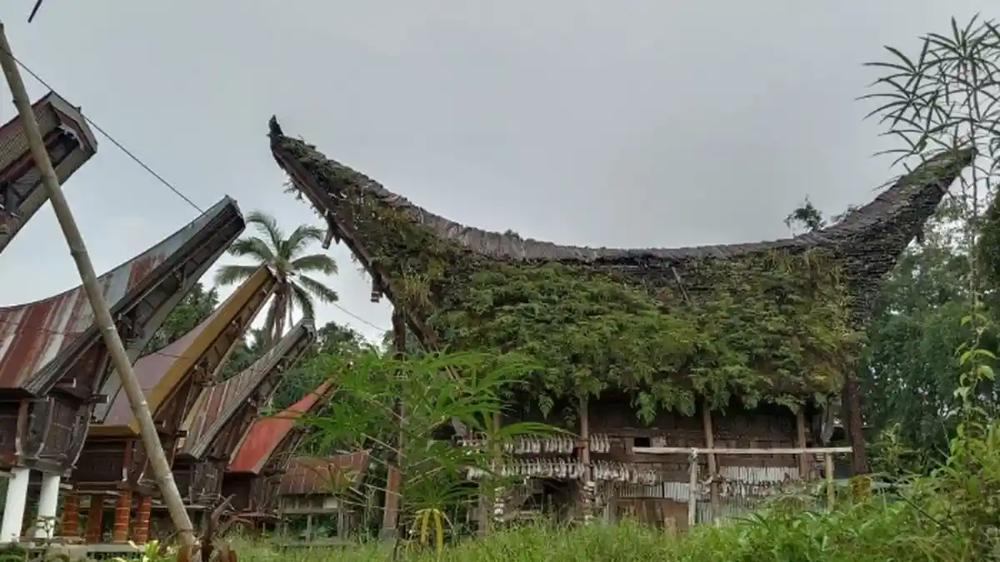

    <meta charset="UTF-8">
    <meta name="viewport" content="width=device-width, initial-scale=1.0">
    
    <meta name="google-site-verification" content="zY3-C_Xaj17ui0u3UqPZDG0WrxZBwA3lyg9sOQedQAs">
    
    <meta property="og:title" content="Sejarah | Lembang Kaero">
    <meta property="og:description" content="Sejarah Lembang Kaero — pusat pemerintahan adat tertua di Tana Toraja, rumah Tongkonan Layuk Kaero yang berdiri sejak abad ke-13.">
    <meta property="og:image" content="https://lembang-kaero.github.io/assets/images/Tongkonan.webp">
    <meta property="og:url" content="https://lembang-kaero.github.io/sejarah.html">
    <meta property="og:type" content="website">
    <meta property="og:locale" content="id_ID">
    <meta property="og:site_name" content="Pemerintah Lembang Kaero">
    <meta name="twitter:card" content="summary_large_image">
    <meta name="twitter:title" content="Sejarah | Lembang Kaero">
    <meta name="twitter:image" content="https://lembang-kaero.github.io/assets/images/Tongkonan.webp">
    
    <title>Sejarah | Lembang Kaero</title>
    <meta name="description" content="Sejarah Lembang Kaero — pusat pemerintahan adat tertua di Tana Toraja, rumah Tongkonan Layuk Kaero.">

    <link href="https://cdn.jsdelivr.net/npm/bootstrap@5.3.2/dist/css/bootstrap.min.css" rel="stylesheet">
    <link href="https://cdn.jsdelivr.net/npm/bootstrap-icons@1.11.3/font/bootstrap-icons.css" rel="stylesheet">
    <link rel="preconnect" href="https://fonts.googleapis.com">
    <link href="https://fonts.googleapis.com/css2?family=Poppins:wght@400;500;600;700&display=swap" rel="stylesheet">
    <link href="assets/css/style.css" rel="stylesheet">


    <header class="bg-white py-3 shadow-sm"></header>

    <main class="flex-grow-1">
        <section class="py-5">
            <div class="container">
                <nav aria-label="breadcrumb" class="mb-4">
                    <ol class="breadcrumb">
                        <li class="breadcrumb-item"><a href="index.html">Beranda</a></li>
                        <li class="breadcrumb-item">Profil</li>
                        <li class="breadcrumb-item active">Sejarah</li>
                    </ol>
                </nav>

                <h2 class="mb-4 fw-bold">Sejarah Lembang Kaero</h2>
                <p class="lead mb-4">Pusat Pemerintahan Adat Tertua di Tana Toraja</p>

                <div class="row g-4">
                    <div class="col-lg-8">
                        <h5 class="fw-bold mb-3">Tongkonan Layuk Kaero — Istana Para Leluhur</h5>
                        <p>Kawasan Kaero sangat identik dengan keberadaan <strong>Tongkonan Layuk Kaero</strong>, sebuah rumah adat agung yang diperkirakan telah berdiri sejak tahun <strong>1242</strong>. Tongkonan ini tidak sekadar menjadi tempat tinggal leluhur, melainkan berfungsi sebagai <strong>pusat pemerintahan adat</strong> dan istana bagi para pemimpin yang menjalankan roda kekuasaan di wilayah Sangalla dan sekitarnya.</p>
                        <p>Dari pusat adat inilah lahir silsilah para pemimpin di kawasan <strong>Tallu Lembangna</strong> — tiga wilayah adat besar: Makale, Sangalla, dan Mengkendek — yang menjadi fondasi sistem pemerintahan tradisional Toraja hingga kini.</p>

                        <h5 class="fw-bold mb-3 mt-5">Struktur Pemerintahan Tradisional</h5>
                        <p>Lembang Kaero menganut sistem pemerintahan adat yang kuat. Secara tradisional, wilayah ini dipimpin oleh seorang <strong>Ampulembang</strong> atau <strong>Arruan</strong>. Dalam menjalankan roda pemerintahan dan peradilan, pemimpin adat ini dibantu oleh empat perangkat penting:</p>
                        <ul>
                            <li><strong>To Manggulapa'</strong> — juru bicara adat</li>
                            <li><strong>To Ma'dampi</strong> — penjaga ketertiban</li>
                            <li><strong>To Mekutana</strong> — penyelidik perkara</li>
                            <li><strong>To Misa'</strong> — pelaksana keputusan adat</li>
                        </ul>

                        <h5 class="fw-bold mb-3 mt-5">Peninggalan Sejarah dan Kepurbakalaan</h5>
                        <p>Selain bangunan megah Tongkonan, Lembang Kaero kaya akan situs cagar budaya masa lalu. Di lingkungan Lembang ini terdapat <strong>Liang Losso</strong>, yakni sebuah situs pemakaman tebing batu (liang) yang dipercaya menjadi tempat persemayaman leluhur sejak ratusan tahun lalu. Situs-situs makam kuno ini menjadi bukti kuat tingginya peradaban dan seni ukir masyarakat Kaero pada masa lampau.</p>

                        <h5 class="fw-bold mb-3 mt-5">Lembang Kaero Kini</h5>
                        <p>Secara administratif, Kaero telah ditetapkan sebagai salah satu <strong>Lembang</strong> (setingkat desa) di Kecamatan Sangalla, Kabupaten Tana Toraja. Wilayah ini terbagi menjadi beberapa dusun atau lingkungan, seperti <strong>Kasean, Kaero Tengah, Galintua, dan Tiangka</strong>, yang sebagian besar berada di ketinggian sekitar <strong>1.000 meter</strong> di atas permukaan laut. Lembang ini menjadi saksi bisu bagaimana tradisi, silsilah, dan hukum adat Toraja terus dilestarikan dan dihormati dari generasi ke generasi.</p>
                    </div>
                    <div class="col-lg-4">
                        <div class="card border-0 shadow-sm">
                            
                            <div class="card-body">
                                <small class="text-muted">Tongkonan Layuk Kaero — rumah adat agung yang diperkirakan berdiri sejak tahun 1242</small>
                            </div>
                        </div>
                        <div class="card border-0 shadow-sm mt-4">
                            <div class="card-body">
                                <h6 class="fw-bold">Fakta Singkat</h6>
                                <ul class="list-unstyled small mb-0">
                                    <li class="mb-2"><strong>🏛️ Berdiri sejak:</strong> ± 1242</li>
                                    <li class="mb-2"><strong>📍 Wilayah adat:</strong> Tallu Lembangna</li>
                                    <li class="mb-2"><strong>🏔️ Ketinggian:</strong> ± 1.000 mdpl</li>
                                    <li class="mb-2"><strong>🏘️ Dusun:</strong> Kasean, Kaero Tengah, Galintua, Tiangka</li>
                                    <li><strong>🪦 Situs bersejarah:</strong> Liang Losso</li>
                                </ul>
                            </div>
                        </div>
                    </div>
                </div>
            </div>
        </section>
    </main>

    <footer class="bg-dark text-white-50 py-5 mt-auto"></footer>

    <script src="https://cdn.jsdelivr.net/npm/bootstrap@5.3.2/dist/js/bootstrap.bundle.min.js"></script>
    <script src="assets/js/Header.js"></script>
    <script src="assets/js/Footer.js"></script>
